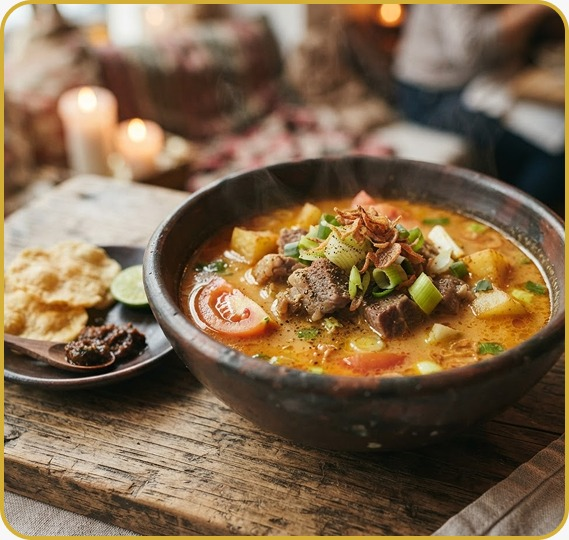
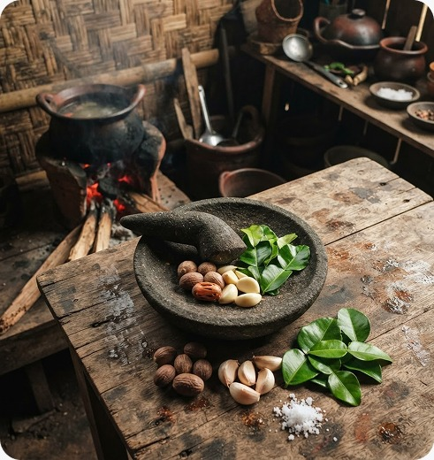
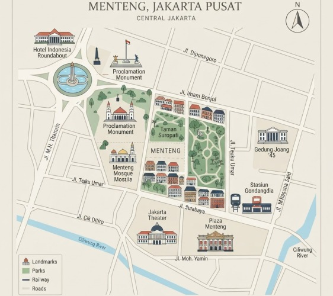
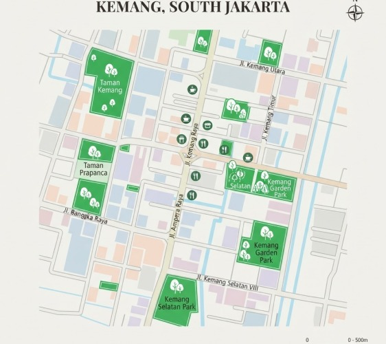

▣
Resep Turun Temurun
Kelebihan kuah legendaris kami terjaga berkat formula 15 rempah rahasia sejak 4 dekade silam.
WARISAN KULINER
Nikmati Soto Betawi dengan cita rasa khas Jakarta, dibuat dari bahan pilihan dan resep yang diwariskan dari generasi ke generasi.


WARISAN KULINER BETAWI
Berawal dari kedai sederhana di pinggiran Jakarta, kami mendedikasikan diri untuk melestarikan keaslian cita rasa masakan Betawi. Resep rahasia kaldu gurih berpadu rempah-rempah alami terus kami jaga demi memanjakan lidah para penikmat kuliner sejati.
Kami percaya bahwa makanan yang lezat lahir dari kesabaran dan kecintaan. Setiap potongan daging sapi pilihan dimasak perlahan hingga empuk sempurna, disajikan hangat dengan siraman kuah santan dan susu yang kaya rasa, menyatukan tradisi dan kenyamanan modern.
“Melestarikan Tradisi, Menghidupkan Memori.”
KEUNGGULAN
Kami menyajikan lebih dari sekadar hidangan makanan biasa. Kami menawarkan kepuasan rasa yang abadi.
Kelebihan kuah legendaris kami terjaga berkat formula 15 rempah rahasia sejak 4 dekade silam.
Setiap potong daging dan sayur kami datangkan segar setiap pagi dari pemasok lokal terpercaya.
Desain interior memadukan estetika Betawi klasik dan kenyamanan modern untuk kumpul keluarga.
Menyajikan makanan dengan integritas tinggi. Semua proses dan bahan dipastikan 100% Halal.
Kebahagiaan pengunjung adalah pencapaian terbesar kami. Berikut cerita tulus dari meja makan kami.
“Soto Betawi paling pas yang pernah saya rasakan di Jakarta. Kuahnya kental gurih seimbang, tidak bikin eneg. Dagingnya melimpah ruah dan sangat lembut!”
“Kombinasi kuah susu dan santannya juara sekali. Kerak telor bebeknya juga dimasak matang merata dengan serundeng wangi. Sangat merekomendasikan tempat ini.”
“Saya bawa kolega bisnis asing ke sini dan mereka sangat mengagumi interior modern-tradisional serta rasa makanan yang kaya bumbu namun berkelas.”
RESTORAN KAMI
Kunjungi cabang terdekat di Jakarta untuk menikmati soto hangat langsung di tempat.

Jl. Teuku Umar No. 12, Menteng, Kec. Menteng, Kota Jakarta Pusat, 10310
Lihat di Peta ↗
Jl. Kemang Raya No. 45B, Bangka, Mampang Prapatan, Jakarta Selatan, 12730
Lihat di Peta ↗PERTANYAAN UMUM
Temukan jawaban atas pertanyaan umum seputar menu, lokasi, dan layanan Soto Betawi Jakarta.
Kami menyediakan Soto Betawi Spesial, Nasi Uduk Komplit, Kerak Telor Bebek, dan Bir Pletok Rempah.
Ya. Semua menu dapat dipesan untuk dibawa pulang melalui fitur pemesanan online di website.
Saat ini Soto Betawi Jakarta memiliki cabang di Menteng, Jakarta Pusat dan Kemang, Jakarta Selatan.
Restoran buka setiap hari mulai pukul 10:00 hingga 22:00.
RESERVASI & PESANAN
Pesan sekarang secara online atau langsung kunjungi restoran kami untuk mendapatkan pengalaman bersantap yang nyaman.